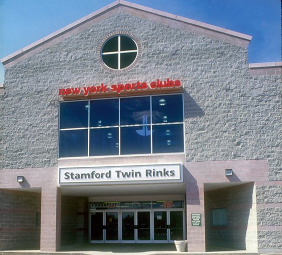
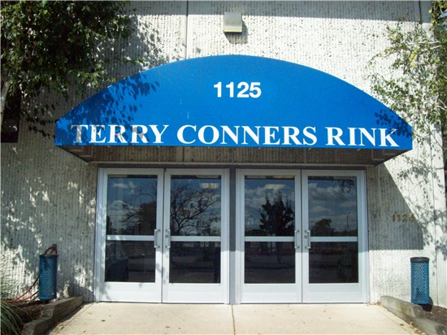

Rinks Near Greenwich
Chelsea Piers Connecticut
Located at 1 Blachley Rd, Stamford, CT 06902, Chelsea Piers has 2 state of the art ice rinks and is located conveniently right off Exit 9 of I-95.

Stamford Twin Rinks
Stamford Twin Rinks, which also has 2 rinks, is located on 1063 Hope St, Stamford, CT 06907. To get there, you are inconveniently forced to take Hope Street, which is extremely crowded and prone to traffic.

Terry Conners Ice Rink
Terry Conners is located only minutes from Chelsea Piers on 125 Cove Rd, Stamford, CT 06902. It is also home to one of the local synchronized skating teams near Greenwich.

Evarts Rink
Located in almost the middle of nowhere, on 240 Jay St, Katonah, NY 10536, Evarts Rink of the Harvey School is one of the further skating rinks in distance from Greenwich.